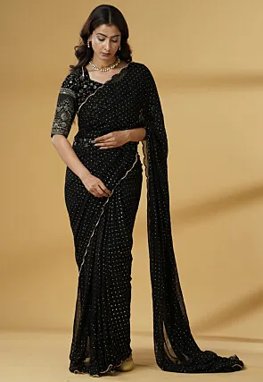

Saree Collection
Maroon Banarasi Saree
₹12,490
A masterpiece of traditional craftsmanship. This stunning maroon Banarasi silk saree features intricate silver zari work throughout. The rich, luxurious fabric drapes beautifully, making it an impeccable choice for weddings, receptions, and grand celebrations. A timeless heirloom piece to cherish.
Blouse Size